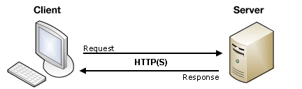
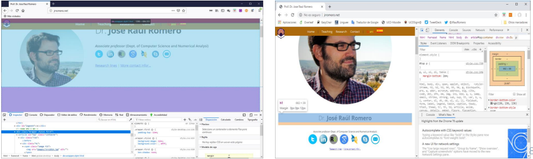
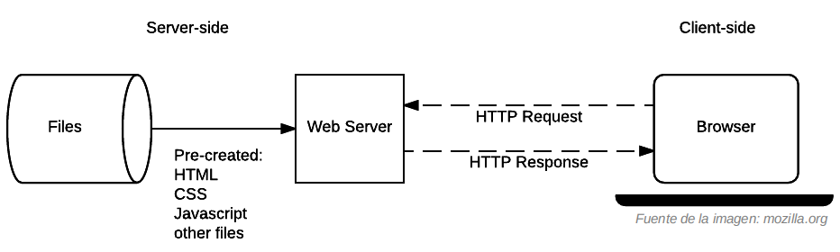
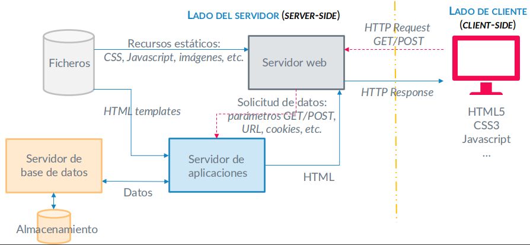
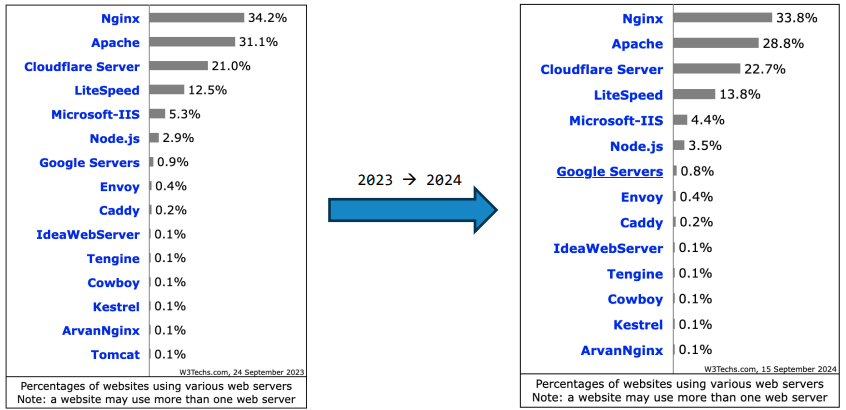
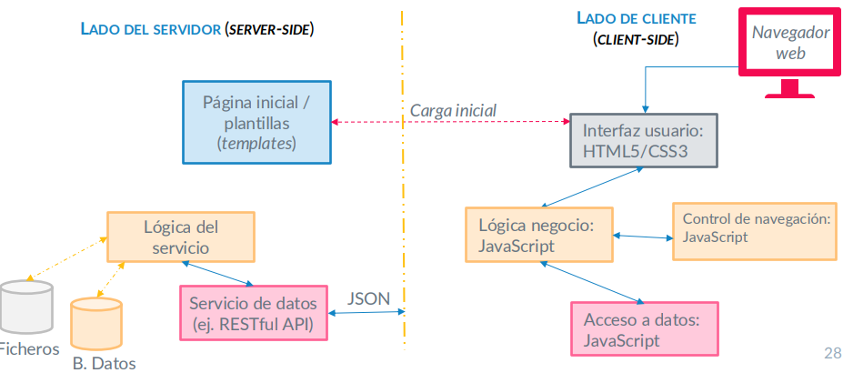
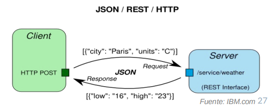

En esta sección de la asignatura vamos a ver la estructura general de la web así como el navegador y los diferentes tipos de localizaciones.
En general sigue la estructura cliente-servidor (C/S)
requests.request con responses.
El navegador Web como Cliente:
El navegador web es el encargado de interpretar el lenguaje del lado del cliente, normalmente recibido en HTTP Response, y de renderizar la salida.
El usuario generará eventos que se resolveran con código del cliente (Validación de credenciales) o generando peticiones HTTP al servidor.
El cliente más habitual es el navegador.
El navegador web como Herramienta de Desarrollo:

Para inspeccionar una página web puedes pulsar ctrl + shift + I.
En primer lugar se nos presentan dos formas de representar la web, similares pero con sus diferencias:
SItio Web VS Portal Web:
Sitio Web: Su objetivo es capturar gran cantidad de tráfico y ser visto, por que representa facilidad para el usuario.
Portal Web: Su objetivo es limitar el tráfico al grupo adecuado de usuarios, a los que se les proporcionan servicios.
Toda solicitud igual al servidor (HTTP Request) devuelve el mismo contenido implementado (hard coded) para ese mismo recurso, no distingue entre usuario siempre dará la misma respuesta HTTP, un ejemplo muy simple y burdo es que cuando se inicie sesión en un página web todos los usuarios tendrán la misma vista.

Ventajas:
200 OK si todo va bien o 400 Not Found en caso de no existir dicho recurso.Incovenientes:
La respuesta devuelta por el servidor (HTTP Response) se genera para cada petición en base a los datos específicos del HTTP Request.
Por ejemplo, si el catálogo está almacenado, la solicitud identificará el ID del producto, que se buscará en la base de datos (no son páginas individuales pre-creadas) y se construirá dinámicamente la respuesta al cliente insertando los datos en una plantilla de HTML.

Los servidores de aplicaciones reciben una solicitud GET/POST y construyen dinámicamente el recurso que sirve de respuesta HTTP.
No sólo generan HTML, también pueden generar otros tipos de medios, como texto, ficheros PDF, CSV, JSON, XML, etc.
Permiten gestionar la redundancia de datos
Ofrecen características adicionales: alta disponibilidad, balanceo de carga, gestión de usuarios y permisos de acceso, seguridad, gestión centralizada, gestión de caché, etc.
Constituyen un modelo de capa de servicio, por lo que ayudan a los desarrolladores web a focalizarse en la lógica de negocio
Comparativa de el uso de servidores web en del último año:

Una aplicación web es un programa que es accesible utilizando cualquier navegador web (p.ej. Google Docs, Google Analytics, Adobe Color CC, etc.).
En general, en la aplicación web el usuario final interactúa con acciones:
No es exclusivo con respecto a Sitio web, ya que un sitio puede proveer determinados servicios a sus usuarios en localizaciones concretas del mismo (la aplicación web puede ser parte de un sitio web)
En la aplicación web, gran parte del trabajo se realiza en el cliente a diferencia del sitio web que la mayoría se realiza en el servidor.
En las aplicaciones web, la transferencia C/S es mayoritariamente de datos a diferencia del sitio web que se transfieren páginas renderizadas (datos + interfaz usuario).
Especificidad: Una aplicación web va destinada a un conjunto concreto de usuarios finales, lo que marcará su diseño e interacción.
Interactividad: Dada la gran cantidad de datos que manipulan, debe ofrecerse una experiencia de usuario ágil y eficaz para el objetivo del usuario.
Integración: La aplicación será un componente dentro de un sistema mayor, intercomunicándose con el resto de elementos (p.ej. Google Docs en Google Suite).
Autenticación: El usuario que realiza la acciones sobre los datos debe obtener los permisos para acceder a la información.
Complejidad: Las tareas que desarrollan las aplicaciones web van más allá que la interacción, tratándose de acciones complejas focalizadas en un dominio de aplicación (especificidad).
Precompilación: La aplicación web debe compilarse antes de su despliegue, frente al uso de plantillas de los sitios web dinámicos.
Despliegue: Los cambios pueden afectar a todo el proyecto: mayor esfuerzo de prueba (test) y mantenimiento.
Una SPA es un tipo de aplicación web de cliente grueso, que no requiere recarga de la página durante su uso (p.ej. Gmail), y aprovecha tecnologías AJAX y de micro-servicios.
Ventajas:
Inconvenientes:

Un servicio web es un punto de acceso a una función software máquina-máquina y que es referenciable mediante URL.
Un servicio web tiene una interfaz, encargada de esconder los detalles de implementación (hardware, software, dependencias, lenguajes de programación, etc.) y definir el formato de datos y el acceso a los mismos.
Los servicios pueden ser utilizados junto con otros servicios, proveyendo múltiples interfaces que constituyen una API, y permiten llevar a cabo transacciones complejas.
La esencia de los servicios web es la Reutilización.
Servicios SOAP (Single-Object Access Protocol):
Funcionan sobre HTTP y otros protocolos (FTP, TCP, colas, etc.).
Estructuran sus mensajes en XML, con E/S fuertemente tipadas a los tipos básicos (¿limitante?).
Ventaja: toda la firma está bien definida: namespace, métodos (signatura completa), tipos y limitaciones, metadatos, etc. en formato WSDL (Web Service Definition Language).
Desventaja: No es adecuado en aplicaciones que requieran un alto desempeño.
Servicios REST (Representational State Transfer):
Funcionan únicamente sobre HTTP con métodos GET, POST, PUT, DELETE (operaciones CRUD)
Ofrece una semántica mejor definida, con operaciones ligadas a los Endpoint o Estructura flexible de los mensajes, no fuertemente tipados, lo que permite comunicar múltiples formatos y tipos de medios
Ventajas: Servicios más livianos e interpretado de forma natural en lenguajes como Javascript → Adoptado en Cloud.
Desventaja: Posibles errores en el caso de implementaciones con lenguajes fuertemente tipados (Java, C#)
REST utiliza los métodos HTTP de forma explícita, ofreciendo servicios sin estado.
Permite exponer las URIs como una estructura de directorios, siendo la base de una API/REST.
Transfieren los datos de la respuesta en formato XML, JSON (JavaScript Object Notation), o ambos.
